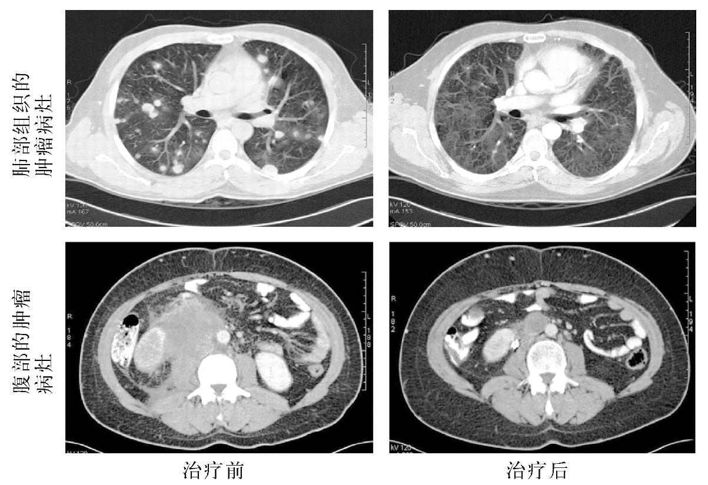

引言
正如我们已经看到的那样，癌症疗法的支柱仍是手术和放疗，两者都可以追溯到19世纪，但也都经历了持续的技术改进过程，而且目前仍在进步。相较而言，癌症的药物治疗则是更加晚近的事。第一个成功的癌症药物疗法是在1940年代使用人工合成的雌激素来治疗前列腺癌。成功的治愈性化疗实际上可以追溯到1970年代，当时研发了针对白血病和淋巴瘤（骨髓和淋巴系统的肿瘤）的治疗方法，然而有趣的是，这些方法所使用的化学药物此前却是为了不道德的目的而研发的（正如我们看到的，该领域首批成功的药物之一氮芥就来自芥子气的活性成分）。新治疗手段的研发和现有治疗手段的改善显然需要研究的过程。本章将会描述某些研发的方式，特别是药物的规则与设备（如放疗仪器）或技术（外科手术）的规则之间的差异。我们将详细探讨这些差异，因为有些重要的差别会产生显著的异常。本章将重点关注新的治疗手段从何而来，但类似的试验结构适用于现有治疗手段之间的相互检验，也适用于对症状控制技术的研究。
新的手术和放疗技术的研发过程与药物的研发过程大不相同。一般来说，手术的改进将是技术上的一个小变化（例如，控制出血的更佳方法），不会从根本概念上改变基础的技术。这样的改进能否获批的根据往往是“目的适用性”（也就是说，它是否真的有助于控制出血？）。同样的理由也适用于技术性放疗的改进（例如，靶向放射而不损害正常组织的更佳做法）。总体而言，这些类型的改进必须更好，随后也会付诸实践，这被认为是不言而喻的。实际上，这些改进也许只是错觉，推进其实施的可能是商业压力，而非任何合理的证据基础。我会用机器人手术技术和调强放疗为例，说明这种情况发生的起源和原因。
另一方面，药物治疗则必须满足全然不同的标准。一般来说，美国的食品药品监督管理局（FDA）这样的监管机构要求，存活率与以前的治疗标准相比必须要有一定的提高。这意味着一种新的药物治疗需要进行一系列临床试验的检测，有大量患者参与其中。这些试验大体上可以分成三个类别，称为一期到三期。
一期试验证明一种药物的安全性和副作用属性。一般来说，只有少数患者参与该期试验，就癌症药物而言，他们通常都是那些已经尝试尽了标准选项以及此前已接受过多种治疗方法的人。效果不太严重的药物，如降血压药，往往会先在健康的志愿者身上进行测试。二期试验规模更大，与一期研究的参与者相比，这一期参与者的“癌症之旅”往往还在较早期，试验的目的在于确认一种药物对目标癌症具备有用的活性。对于看起来很有希望的药物来说，最终的三期试验会将其与被认定为治疗标准的任何项目进行比较。一次三期试验会有数百乃至数千患者参与。这样的设计本身就有很多问题，从批准文件、成本到法律负担等等。三期的批准试验如今几乎都是国际事务，必须遵守多个国家的法律框架，特别是美国的。这种试验成本巨大，也就解释了新药的昂贵——一种癌症新药从合成到注册要花费大约10亿美元。批准的过程——给予公司在市场上营销一种药物或产品，并从中获利的权利——受到FDA等国家或跨国机构的严格监管。下一章将会进一步讨论监管这个主题，可以说，对试验的高水平监管保护了试验的个体参与者免受可能的伤害，却让整个社会付出了代价，即拖慢了改进的步伐，并把新药的成本抬高到获取日益受限的地步，就算在最富裕的国家也是如此。
研发癌症新药
基础科学
显然，癌症研究有着体量庞大的生物研究的支持。过去50年里生物研究取得了巨大的进步，特别是DNA结构和所谓的生物学“中心法则”的解读，即第二章详细讨论过的DNA、RNA和蛋白质的关系。前几代癌症药物基本上都是通过观察化学物质对细胞的影响来进行研发的，目的是寻求对杀死肿瘤细胞特别有效的药物。这种研究产生了1970年代和1980年代大量出现的化疗药物。虽说新的化疗药剂现在仍在生产，但与前几十年取得的巨大进步相比，近来的药物给人以回报减少的感觉。
近来的研究重点，是与目标小分子和单克隆抗体有关的肿瘤分子标签的最新知识，上一章讨论过相关内容。20世纪末，人们对人类基因组进行了测序。最初的测序技术笨拙而缓慢，第一个完整的序列花了很多年才完成。这项任务完成之后，如今在了解了人类基因组整体结构的情况下，就有可能给具体癌症的基因组测序，并将癌变DNA和提取自患者血细胞的正常DNA进行比较了。如今，专门的实验室团队只需短短几周就能完成这一任务，成本也在迅速下降。在接下来的几年里，技术、所需时间以及成本都很可能取得惊人的改进，以至于为每一位患者的肿瘤单独确定DNA序列可能很快就会成为诊断检查的一部分。就目前来说，这项工作还是实验性的，这个全新的研究领域正在出现显著的成果。
人类的细胞有大约21 000个基因，排列在23对染色体上。如今已为一些肿瘤进行了全部基因的DNA序列与患者的正常DNA之间的比较，结果表明，正常细胞和肿瘤细胞之间的差别微乎其微。平均而言，这类实验大约会显示40到60个异常。换句话说，如果我们把人类基因组看成是一座有23册书（染色体）的图书馆，每册书有大约1 000页（基因），那么整个肿瘤细胞版本“图书馆”的排字错误总共有40到60个。此外，这种基因上的“排印错误”有很多实际上并不会改变基因的“含义”，所产生的蛋白质仍然会保留正常的功能。癌症过程的主要驱动因素可以归结为大约12条路径。以这种方式进行研究的癌症中突变或失能的基因都属于这些路径中的一条，看来也的确出现在研究的所有癌症中。该工作为下一阶段的癌症药物研发指明了道路。新一轮的小分子和单克隆主要（但并非全部）关注单一分子，如赫赛汀所针对的HER2。这一新的全基因组研究工作则突出表明有必要以多种基因而非单个成员的路径为目标。未来的药物筛检有可能关注肿瘤生物学的这一方面，与全基因组筛检联手，查明特定肿瘤中关键的突变基因。它也开启了一种可能性，也就是未来的药物将在有特定遗传标记存在的情况下起效。因此，将全基因组测序与诊断联系起来，可以指引人们去寻找肿瘤医学的“圣杯”之一，即药物治疗的个性化选择。
临床前期
新药研发的第一步是为人类研究选择合适的化合物。这日益得益于上文描述的癌症路径研究工作。当前，查找这类化合物可以采取很多形式，从化合物的随机筛检，到定向合成药物，以命中肿瘤细胞中预先明确的异常情况。当前在临床中使用的药物有很多来源，其中有些在上一章已经谈过了。候选药物的初步测试将包括实验室里的肿瘤细胞实验。这些肿瘤细胞有各种来源，从人类的恶性肿瘤到实验室动物产生的人工肿瘤。某些人类细胞系是从手术切除的恶性肿瘤中提取碎片，并在实验室的细胞培养基上培养而来的。这个过程在概念上非常诱人——可以在“真正的”肿瘤上测试药物。
这样的细胞系有很多种，最著名的大概是海拉细胞系了。这个细胞系来自一个名叫海莉耶塔·拉克斯（起初为了保护她的隐私，也曾称其为海伦·莱恩或海伦·拉森）的女人的子宫肿瘤碎片，广泛应用于全世界各地的实验室。顺便提一句，她本人或家属都没有同意或允许这一做法，因此1990年在加州有一次著名的庭审，法庭判决，这样的做法在美国是合法的。英国和其他国家的情况有所不同，如今，根据法律规定，采集组织必须在患者知情的情况下征得其同意方能进行。根据计算，人工培养的海拉细胞比拉克斯女士一生生长的“正常”细胞还要多很多倍，这使得她以一种奇怪的方式得到了永生。然而细胞系的问题在于，大多数试图培养患者肿瘤细胞的努力都以失败告终。因此，我们拥有的细胞系可能缺乏对典型肿瘤的代表性，因为海拉细胞只代表海莉耶塔·拉克斯一个人。然而尽管有这样的局限，人类肿瘤细胞系仍是癌症研究和药物测试的关键组分。
应用的第二种形式的细胞系得自动物肿瘤，大多数来自小鼠。这些肿瘤中有很多都是人为设计的。一个很好的例子就是在前列腺癌研究中使用的一种人工设计的细胞系。小鼠不像人类那样，会患上前列腺癌，但还是有可能识别小鼠前列腺所表达的基因，并利用那些基因的启动子区域（见第二章）来驱动引发肿瘤的蛋白质的产生。在小鼠的例子中，使用的是来自一种名为SV40的致癌病毒的基因，它有一个古怪的名字，叫“大T”。顺带说一下，尽管很多基因的名字都是一连串难记的字母和数字（毕竟单是人类基因就有21 000个——要起名字的非常多），仍有一小部分名字一个（大T）比一个（刺猬、无缺）古怪，还有些有趣透顶——参与细胞发送信号的一对基因被叫作“疯子”和“麦克斯”！
为了让小鼠长出前列腺肿瘤，必须把包含有前列腺特异基因启动子和SV40—T基因的杂合基因插入一个小鼠的受精卵。如果插入成功，就会得到一只转基因小鼠，这样，成长的小鼠就能在其前列腺中表达外来的基因了。可以预测，这些小鼠会继续长出多个前列腺肿瘤。人们培育了一些这种易患癌症的小鼠，该品系被称作“小鼠前列腺转基因腺癌”（TRAMP）模型。事实证明，这些小鼠有多种用途。首先，因为小鼠一定能长出肿瘤，它们可被用于检验诸如饮食干预等预防癌症的策略。其次，它们的肿瘤可以用于测试药物治疗的有效性。最后，来自TRAMP小鼠的肿瘤细胞已经在实验室成功地培养出来，这些细胞系可以供试验使用：既可单独使用，也可被重新移植进同一小鼠品系的成年动物体内——这比等待TRAMP小鼠本身长出肿瘤来要快得多，可复制性也更强。上面的讨论显然又表明，这些模型只能代表人类疾病的某些方面，而不是其完美的复制品。因此，它们虽然有用，但药物最终还是必须在人类身上进行测试。
在一种药物可以施用于人类之前，需要进一步的临床前期测试——毒性试验。尽管动物模型和细胞培养可以作为有用指标，以观察一种药物是否对人有效，但我们无法据此判断该药物是否安全。我们还需要知道是否有望在患者体内施用足以对肿瘤产生实际影响的药物剂量。探究这个问题的标准方法是不断提高给动物群组的剂量，直到开始看到有动物死于药物的副作用为止。还有一些相当可怕的标准措施，如杀死一定比例的试验对象的药物剂量——术语称之为致死剂量（LD）试验。LD50（杀死50%动物的剂量）和LD10（10%的死亡率）等方法得到了广泛应用，也引起了来自反活体解剖组织的许多争议。我并不想探究动物试验本身的伦理——在我看来，这是见仁见智之事。如果你认为此事是不道德的，那么，无论有多少争论一般都不会让你改变立场。不过我确实认为，有必要批判性地考察一下动物试验的科学基础，以便将不必要的痛苦降至最低。LD50试验有很多显而易见的问题——例如，对于某种给定的化合物来说，LD50在不同物种之间的差异很大，因此仍会让人类对象面临风险。不过，如果在远低于必要的治疗水平的剂量下，LD50试验证明毒性很大的化合物不太可能是安全的，也不值得进行人类试验。无论孰是孰非，也不管临床前毒性试验的局限性如何，目前监管当局要求在就某种药物开展任何人类试验之前，这类试验至少要在两个物种上进行，其中一种必须是非啮齿类（例如狗）。
一期试验
研发出候选药物，并完成必要的临床前试验程序之后，下一步就是在人类对象身上进行试验了。从逻辑上讲，这个步骤被叫作一期试验。对于降压药等很多药物而言，这个试验将在“正常”的志愿者身上进行，一般是有报酬的。总的来说，这些人都是健康的青年男子（而不是女人，因为存在对胎儿造成意外伤害的风险）。对于往往毒性很强并有致癌可能的癌症药物而言，这显然不是合适的做法，因而一期试验通常都在那些穷尽了所有标准治疗方案的患者身上进行。一期试验的经典形式是：最初有三位患者接受保守的低剂量治疗并观察其效果。如果没有产生不可接受的毒性，再安排另外三位患者接受更高剂量的治疗，以此类推。显然，大多数药物最终总会达到那个有不可接受的副作用出现的剂量（术语称之为“剂量限制性毒性”，或DLT）。如果一位患者经历了DLT，就会有更多的患者接受同等剂量的治疗。如果六位患者中有两名或更多的人经历DLT，那么就达到了该药物的“最大耐受剂量”（MTD），试验就此结束。MTD 之下的剂量将会用来做进一步的研究。
经典的一期试验的优点就是操作简单，但显然也有局限性。首先，不同的患者对可能的剂量限制性副作用的易感性不同。如果试验中有太多容易出现副作用的患者，最大耐受剂量的预测值就会过低，反之亦然。其次，并非所有的药物都需要用最大耐受剂量。例如，阻断激素受体的药物只需足够的剂量便可阻断目标。超过此剂量的任何过量施药都只会增加毒性而毫无益处。因此，对于这类药物的试验，就有必要明确规定所需的终点，以避免参与者经受不必要的药物毒性。
一期试验的主要问题与患者的需求有关。在大多数情况下，这些研究都发生在那些穷尽了所有标准治疗方案，显然迫切需要进一步可行疗法的患者身上。就其本质而言，一期试验使用的药物一般低于其可能的治疗范围，因此获益的机会也较低。此外，参与一项研究的最后六位患者中，至少有两位将会接受过高的剂量，经历严重的副作用。最后，进入一期试验的大多数药物都因为无法预见的问题而不能施用足够的剂量，或者干脆对目标肿瘤没有任何疗效，因而实际上无甚治疗价值。因此，大多数患者需要把进入一期试验主要看作是为他人奉献的行为，实际情况也的确如此，参与试验的很多患者会说：“好吧，如果这能在我死后帮助其他的人，那也值了。”尽管如此，伦理委员会和医生们仍必须小心保护脆弱绝望的患者免受这些试验的伤害。
二期试验
如果某种药剂在一期中表现出色——换句话说，副作用既可控也可接受，通常还有证据表明对肿瘤有积极影响，那么接下来就会进入二期试验。二期研究的目标是更详细地研究药效。药物将以一期确定的最佳剂量进行试验，参与其中的是一群经评估有可能从中获益的患者。这显然与一期不同，剂量不足或过量的风险大大减少了，但仍然存在，原因就如上文所述，一期确定剂量的机制存在着局限性。此外，由于选择患者的依据是有无可能获益，参与者的风险/获益率要高得多。一般来说，有多达40或50位患者会进入二期试验，在更加明确、通常也更适合的患者人群中，最终目标是药物的功效，当然也包括安全性。
如何定义药效是个大问题。一般来说，能使肿瘤缩小的药剂便可被定义为有效，这样就产生了一系列标准化的定义方法，来定义肿瘤缩小多少才算是值得尝试的反应。最广泛使用的方法是RECIST（实体瘤临床疗效评价标准）系统，该系统首次发表于2000年，并在2009年1月进行了更新。疾病应答可以宽泛地分为如下类别：
● 完全缓解：所有可评估的病灶都消失了；
● 部分缓解：所有可评估的病灶按预先明确的程度而缩小了；
● 病情稳定：变化不足以归于另一类别；
● 病情进展：病灶按预先明确的程度恶化，或有新的肿瘤病灶出现。
这一评估系统的基本原则很简单，实际应用却很复杂。和很多事情一样，魔鬼就在细节之中——以下是一份（并不全面的）棘手问题清单，说明了问题的困难程度：
● 肿瘤应该增长多大才算得上病情进展？
● 它应该缩小多少才算得上对治疗产生了反应？
● 某些肿块缩小而其他肿块却没有，该当如何？
● 何时进行应答测量（太早会报告不足；太晚则患者有可能开始复发）？
● 骨骼或胸膜（肺脏周围的内膜）等组织没有离散的肿块可供测量，如何评估那里的肿瘤病灶？
最后一点是主要感染骨骼的前列腺癌等疾病特有的问题。因此，尽管治疗反应仍是一项重要的药物活性测试，人们如今却越来越多地使用第二组测量方法——其依据是患者需要多长时间病情才会开始恶化，术语称之为“进展时间”。事实证明，这对与肾脏有关的癌症等病的靶向分子新疗法来说尤其重要。这种病的大肿块常常会缩小，但程度低于通常的RECIST标准。在复核这些患者的扫描影像时，肿瘤的外观明显改变了，核心部分的“活性”似乎也不如从前——切除肿块后发现中间有坏死组织，就证明了这一点。与此同时，与肿瘤有关的症状往往也得到了改善。因此，对这些患者来说，“稳定”病情的时间延长了，成为一个非常有意义的结果。病情进展的延缓因而经常被用作评估某种药剂活性的方法。最后，当然可以根据对整体存活时间的影响来评估药效。这种方法在二期中不太常被用作主要结果，原因有很多，其中最主要的就是时间——毕竟，最终目标是尽快确定哪些药剂可以进入三期的批准试验。
三期试验
如果某种药剂在二期表现出令人鼓舞的活性，其毒性也可接受，那么就会进入三期试验，将该药剂与当前的治疗标准进行比较。如果该药剂是一种新药，这一般还会涉及制药公司与诸如英国药物和保健产品监管署（MHRA）、欧洲药品管理局（EMA）及美国食品药品监督管理局（FDA）等监管机构一起对试验进行讨论。这些机构会对适当的对照组疗法以及获得批准必须达到的结果给出意见。对照组可能是现有的一种药物或组合药物，也可能是所谓的“最佳支持治疗”。如果没有明确的标准疗法，就会选择后一个选项——患者接受临床医师认为合适的任何缓解措施。
三期试验的标志性特点是，患者的治疗方案是随机分派的。这保证了患者在不同的试验组别之间平均分配，由于预后更好或更坏的患者被集中在一个试验组里而造成结果差异的风险也会被降至最低。虽然这一设计在科学上很有道理，并被视为评估方法的“黄金标准”，但万事均有其局限性。
首先，同时也最明显的是，当对照组是最佳支持治疗或更糟糕的安慰剂药物时，患者会不愿意参与，这是可以理解的。此时显然需要细致的解释和支持，特别是要解释清楚如果没有其他经过证实的替代疗法，那么试验之外的疗法与对照组无异。然而，三期试验常常不是将新药物与安慰剂进行比较，而是与当前标准疗法比较。这在临床上一般更容易解释，因为每个人都接受了治疗，而新药可能不如旧药——这些只有试验完成之后才会知道。就算对照组是安慰剂，这也绝非在假设新药必定更优——药物无异于安慰剂的试验实例有很多，甚至效果更差的例子也不是没有——它可能既有毒性又无药效。
其次，大多数新药只会略强于现有的药物，因而试验各组之间的差异可能会很小。为了检测微小的差异，有必要扩大样本容量，以确保结果在统计学上的置信度。鉴于统计学是一门饱受嘲笑、中伤和误解的科学，用一个简单的例子来说明样本容量为何要大是很有帮助的。假设我们想评估用来抛出的那枚硬币是两面平衡还是有所偏重。如果我们抛了一次，则要么得到正面，要么得到反面（忽略硬币立住的可能性！）。如果我们再抛一次，并得到同样的结果，我们得到（比方说）100%的正面，0%的反面。但根据这样的样本容量没人能说这枚硬币有一面更重。假如我们继续下去，抛了10次——6次正面，4次反面——我们有把握说这枚硬币两面不一样重吗？大概没有。然而，如果我们抛了100次，60次正面，40次反面，或是抛了1 000次，600次正面，400次反面，我们就会越来越有把握说这枚硬币真的有偏重。把问题反过来问就更难了：如果我们得到501次对499次，可以说这枚硬币有偏重吗？大概还是不会。但510次对490次呢？520次对480次又如何？两个数字要有多相近，才可以说差异大概是巧合，而不是因为硬币有偏重？就连600次对400次这样大的差异也可以是一枚公正的硬币发生的巧合，但可能性很低。因此，一个试验的统计方案非常关键，它会明确规定需要多少患者，才能在试验开始前可靠地检测出被认为具有临床重要性的最小差异。对于测试晚期癌症新药的试验来说，至少要按照三个月存活期的平均改善情况来测试。正如我们抛硬币的例子那样，这有可能是碰巧，因此，试验统计学家会计算需要多少患者来可靠地显示（或排除）这种差异——通常（在很大程度上任意地）定义为20次中出现少于1次的偶然结果。
大多数现代试验都会设立一个委员会［通常称作“独立数据监察委员会”（IDMC）或“数据与安全监察委员会”（DSMC）］，独立监察不断累积的结果。该委员会的设置主要是为了保护患者，例如，如果有不可预知的毒性问题，试验会尽早停止。在试验过程的后期，如果提前实现了预先确定的终点，IDMC会终止研究。这样就可以尽快发布数据，也方便其他患者尽早用上这种药物。反过来，IDMC也可能认为试验永远不可能表现出显著的差异，并因其徒劳无益而提早终止试验。
试验的终点充满争议。试验所费不赀，每每在1亿美元以上，因而制药公司希望它们能尽可能规模小、进程快。与此相反，监管者希望有最可靠的结果衡量指标，因而希望延长随访时间或扩大样本规模。社会大众的需求在两者之间。我们都希望有更好的药物，如果患上癌症，恨不得立刻能用上它们。同样，我们也希望它们是安全的。此外，试验的规模越大、时间越长，制药公司为了抵消更高的研发成本，就会提高药价——参见第五章对这个主题的详细讨论。随着卫生预算的增加，降低药价的压力就会上升，使得贫困国家的癌症患者获取新药越来越受限。为了摆脱这种矛盾的紧张关系，研究者日益致力于寻找所谓的“替代”终点，旨在尽早选择一个可以准确预测试验最终结果的终点。二期试验的应答率就是替代终点的一个例子，用于选择一种药物投入三期研究。问题在于，应答率和监管者要求的那种终点（如存活率改善）之间的相关，并没有好到足以让二期的高应答率直接促成药物获批。同样的情况一般也适用于随机试验中应答率之间的比较。
为了避免使用基于存活率的比较（那显然耗时很长），研究者必须证明，某种早期的指标能够可靠地预测最终的结果。上文提到的“延缓进展时间”就是一例。这指的是肿瘤以预先明确的数量生长或扩散所需的时间，通常用来作为早期乳腺癌的调查试验的一个终点。在某些疾病的环境中，例如前列腺癌中的PSA，候选标记并不可靠，前列腺癌的药物目前仍然需要证明存活率有所提高才能获得批准。当前，前列腺癌的研究正在评估一种应答的新方法，即计算循环系统中的肿瘤细胞数量。一般来说，这些数字都极其微小——关键的临界水平是每7.5毫升血液中有大约5个——这就像是在数千万个血细胞的巨大草堆中寻找区区数根缝衣针。当前很多疾病像前列腺癌一样，被困在整体存活率的终点前，如果这样的检测获得了批准，就可以大大加快癌症药物研发的步伐。因为试验时间缩短，成本更低，获得批准后，同样也会降低药物的价格。
现有治疗的比较
上文描述的一期到三期的方案可以广泛地适用于任何新技术或新药物的组合，然而，不同国家的要求也各不相同。现有药物新组合的比较试验往往是由英国癌症研究中心或美国国家癌症研究所这样的学术组织进行的。使用上面的模板会得到能够影响实践的可靠结果，一般来说也是推进医疗实践的黄金标准。但这个系统在手术技术、放疗设备、其他设备以及生物标记物等方面的明确性就差多了。例如，机器人手术等新技术是作为渐进式改进事物被引入的。这些“改进”被看作是不言而喻的，而实际上或许根本不是那回事。例如，将开放式手术与机器人辅助手术进行比较：进入身体的途径就不相同；外科医生的双手与组织之间的触觉联系在机器人辅助手术中消失了；止血或肠穿孔等并发症或许会引发不同程度的风险，可能需要从机器人辅助转换到开放式的传统手术上来；外科医生在培训的情况下，手术时间可能会更长，如此等等。显然，这些因素中的每一个都完全有可能对结果产生重大影响。此外，还有成本的大问题。一台手术机器人的成本超过100万英镑，每年还需要10万到15万英镑的运营成本。就算结果更好一些，比方说出院时间提前一些，又值得付出多少代价呢？
人们或许以为在例如前列腺切除手术中采用这样的技术也有同样的试验要求，就像前列腺癌新药的研发所需的试验那样，而结果一样或更好。但这样的试验从未进行过，而外科机器人已经在全世界各大手术中心运作起来了，尤其是在美国。为何存在这样巨大的差异呢？本质上，新设备只需在其设计目的上表现出安全性与适用性即可。在变化的确很小并且是渐进式改进的情况下，进行一次大型试验来证明一种新的手术刀略好一些，这种做法显然不切实际，大概也毫无意义。变化在某个时间点就不再是渐进式的了，在我看来，手术机器人正是这方面的一个好例子，而我们仍把这些机器人看作一种稍有改善的手术刀。特别是在美国，购买一台手术机器人成为医院营销的重要噱头：它是一种标志性的工具，哪个开拓进取的机构不想拥有它呢？在医疗系统为成本上升焦头烂额之际，解决这个问题很可能变得越来越重要。当然，可以想见，新技术实际上节约了成本。坚持使用机器人，声称学习过程缩短，住院天数变少，并发症发生率降低可以抵消投入资金和运营成本，这种说法并非不合情理。然而，就目前而言，我们还是不甚清楚。
类似的争论也适用于成像和其他诊断检查。同样，这里也有一个显而易见之事无须研究证明的问题：成像更加清晰的扫描很可能比模糊的好！然而，仔细考察就会发现，实际情况更加复杂。比方说，影响决策的一个关键因素是肿瘤是否已扩散到某个特定的器官。一般来说，如果某个已知有风险区域的扫描显示不正常，这很可能代表疾病存在。然而反之并非如此：扫描结果为阴性可能意味着阴性，也可能意味着疾病低于检测阈值。这已经由第三章讨论的假设肝脏扫描说明。这种问题的一个好例子是在淋巴结处检测肿瘤。由于淋巴结是正常的组织，而淋巴结里的肿瘤与正常组织的密度相近（因此成像的外观也相近），所以成像只能告诉我们淋巴结的大小是正常还是异常——通常来说，临界尺寸是5毫米左右。显然，如果有一个4毫米的肿瘤病灶占据了大部分淋巴结，那么它看起来就会很“正常”。

图22 扫描影像上肿瘤应答的示例
假设为淋巴结疾病研发出了一种更好的成像检查，该如何评估它呢？这样的检查会与外科设备同属一种监管方法：需要证明其针对所要达到的目的是否安全和适用。安全性一目了然——一期和二期的常规路线显然就很奏效，但我们如何证明“目的适用性”呢？答案是某种形式的临床试验，但终点的问题非常复杂——我们需要检测出多少个含有小型恶性肿瘤的“正常”淋巴结才算有价值呢？可以错过多少个？如何评估“真”阳性率和“真”阴性率？是否该转向更广泛的临床结果，而不是计算淋巴结的数量——比方说，与标准的治疗方式相比，这项检查的应用是否会导致更好的临床结果，例如患者的存活时间更长了？
在新扫描仪器的购置成本非常高的情况下，在成像技术上，这些也都是非常麻烦的问题。就连对新的造影剂这种加强现有扫描仪器的技术来说，这些问题也很严重，全球对此都没有一致的单一解决方案。
类似的争论也适用于诊断检查。同样，乍看之下，问题似乎很简单——如果有一种血液检查与癌症相关，就应该把它作为临床决策的基础之一。但如果我们查阅文献，就会发现有很多检查都与疾病存在与否相关，但鲜有在实际中用于临床的——何以至此？关于这个问题，最主要的答案是该检查必须对已知的内容给出额外的信息。例如，有大量的尿液检查与膀胱癌相关，但英国没有使用其中的任何一个。膀胱癌疑似患者需要做膀胱镜检查来确认诊断。可用的尿液检查不够可靠，不足以让患者免于膀胱镜检查。一旦检查了膀胱，如果发现肿瘤，就需要活组织检查。同样，这些检查的可靠性也不足以排除活检的需要。此外，切除活检也是治疗的一部分，因此无论这项检查有多优秀，患者仍需手术。预后的判断如何呢？同样，尿液检查很好，但又不像被切除肿瘤的病理学研究那么好，所以它还是没有给出额外信息。鉴于以上所述，诊断过程的检查适用与否在于它对结果的影响——该项检查是否可以免去侵入性治疗，或预测哪些治疗方案是最佳的？这需要进行大规模试验，就像为药物获批而进行的那些，也解释了为什么辅助临床决策的既有检查或标记物少之又少。
有不少标记物与疾病密切相关，可以在出现临床症状或扫描结果发生明显变化之前，用来预测临床事件。这样的标记物包括前列腺癌中的PSA、卵巢癌中的CA125，以及睾丸癌中的AFP和HCG等等。就算存在良好的标记物，也不一定能用它们来取代其他的临床评估方法。例如，尽管PSA的变化大致能够反映病情的变化，可以影响临床结果的某些治疗（名为双膦酸盐类的骨骼强化药物就是一个很好的例子），对PSA含量的影响却很小，虽说它有助于防止癌症对骨骼造成损伤。更加惊人的是，最近对卵巢癌和标记物作用进行的一次大规模研究得出了非常反直觉的结果。血液中CA125含量的上升准确预测了临床上的复发。人们或许以为尽早治疗复发会比等到症状发展时再治疗要好。该研究比较了标记物驱动型治疗的策略（就是标记物含量一旦升高，就开始对复发进行治疗）与临床上的症状驱动型治疗。总共有大约1 500名女性参与了这项研究，在检测更严密的女性中更早地采取治疗并未影响其存活时间。更惊人的是，接受临床驱动型治疗的女性，其生活质量和焦虑程度更好一些——因此，密切检测和早期治疗的总体效果实际上较差。
当前研究的一大焦点是个体化治疗，也就是识别标记物，从而根据个人的具体情况来调整治疗。描述肿瘤特点的方式有很多——通过其DNA的突变、蛋白质表达的模式、观察各种酶的活性等等。然而，尽管识别与不同结果相关的模式相对容易，但从以上讨论中可以明显看出，这并不足以改变治疗。为了证明其临床价值，需要临床试验将候选的标记物驱动型策略与标准的治疗方法进行比较。正如上文卵巢癌的例子所表明的那样，就算有优秀的标记物也无法确保一定能得到期待的结果。可能会出现的另一个问题是，正在研发中的候选标记物数量可能超出了研究团队进行试验的能力，甚或多出很多倍。此外，标记物实际上把一种疾病从一种同质体变成了彼此不同的若干子实体。因为优秀的试验需要大量参与者，这使得进行试验变得更加困难，因为该疾病实际上变得更加罕见了。肾癌最近出现的变化可以证明这一点。不久前，研究者描述了一些病理上的变体，但在靶向小分子出现之前，这些变体并未给治疗方案带来什么影响。如上文讨论的那样，肾透明细胞癌的异常情况（约占总数的70%）催生了新的治疗方法。那么剩下的30%该当如何？这30%是由几种不同的亚型组成的，因为每一种都实在罕见，试验如今变得困难起来。结果，我们实际上不清楚该如何处理这些亚型。这些所谓的“孤儿”疾病会越来越常见，并且因为试验数据对指导治疗用处不大而问题重重，试验也因为人数不够而困难起来。
结语
接下来的几年，我们将会在癌症新药、新的生物标记物，以及诸如手术机器人等激动人心并充满未来感的技术上迎来很多令人振奋的进展。如何将这些发展融入实践中，在很大程度上依赖于支撑它们使用的临床研究。然而，新技术往往尤其会通过营销而非试验的渠道来推广。在医疗保健预算面临着人口老龄化和信贷紧缩带来的巨额债务的压力下，我们如何批准、监管92和资助这些设备将会越来越问题重重。